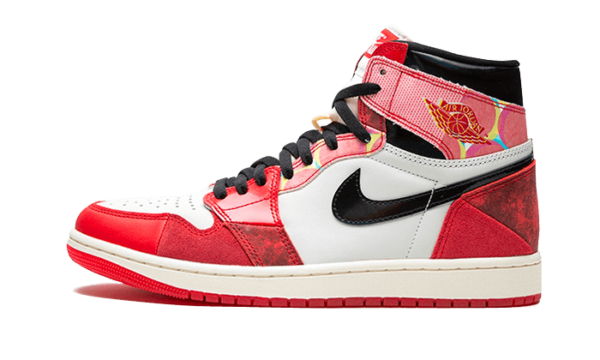
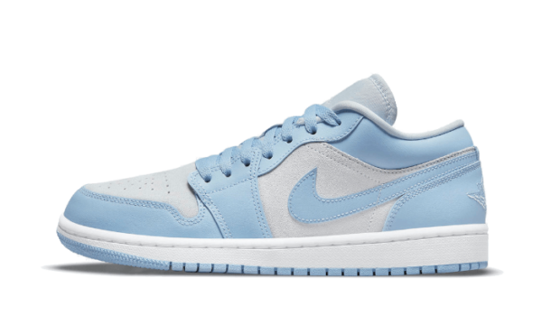
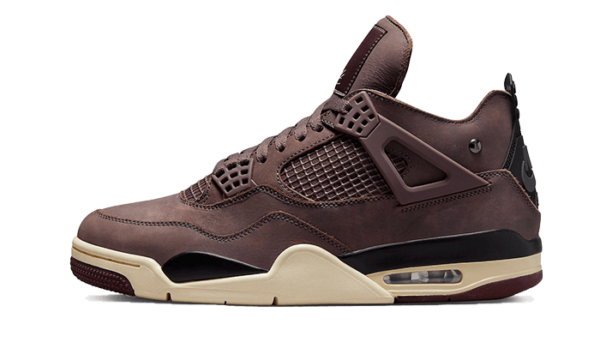
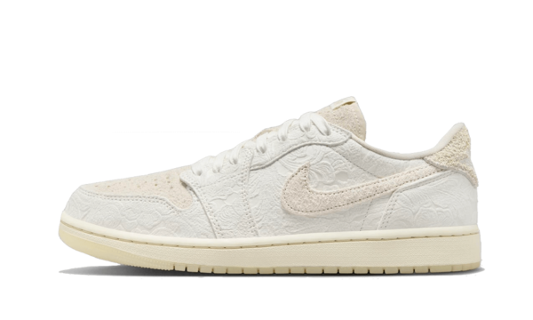

Bienvenidos a nuestro almacen de ventas
Nuestra página web "Almacén de ventas" está diseñada para ofrecerte una experiencia única en la compra de calzado exclusivo de la marca Air Jordan. Aquí podrás explorar una selección de zapatillas de edición limitada, incluyendo colaboraciones especiales con artistas y diseñadores como J Balvin, Chris Paul, y A Ma Maniére. Cada producto está cuidadosamente descrito, destacando sus características y diseño, acompañado de imágenes que te permitirán apreciar cada detalle. Hemos organizado el sitio para que puedas navegar fácilmente entre nuestras secciones de inicio, productos y contacto, brindándote toda la información que necesitas para una compra segura y eficiente.
Nuestros productos
Producto 1
Las Air Jordan 1 High OG Spider-Man Across the Spider-Verse ofrecen un emocionante viaje a través del Spider-Verse, fusionando el legendario legado de las Air Jordan 1 con la fascinante estética de Spider-Man. Esta colaboración de Nike y Jordan Brand, conocida como “Next Chapter”, es la segunda incursión en el universo del Spider-Verse, y promete llevar la experiencia a nuevas alturas.
Precion: 525.000
Producto 2
Sumérgete en la fusión perfecta de estilo y comodidad con las Air Jordan 1 Low University Blue Grey (W), unas zapatillas de perfil bajo diseñadas para brindar un toque de elegancia a tus actividades diarias. Estas zapatillas, que alcanzan justo debajo del tobillo, ofrecen una opción versátil que se adapta a diversas ocasiones, desde caminatas casuales hasta situaciones más relajadas. La combinación de colores University Blue y Grey agrega un toque de frescura y sofisticación, elevando tu estilo con cada paso.
Precion: 450.000
Producto 3
La emocionante colaboración entre James Whitner de A Ma Maniére y Jordan Brand ha dado vida a una silueta AJ 4 verdaderamente lujosa. Las A Ma Maniére x Air Jordan 4 Violet Ore son una expresión de sofisticación y estilo, fusionando la visión única de A Ma Maniére con el legado atemporal de Jordan.
Precion: 610.000
Producto 4
Embárcate en un viaje visual a través de las Air Jordan 3 x J Balvin Medellin Sunset, una colaboración dinámica que fusiona la energía vibrante del reguetonero J Balvin con la icónica marca Jordan. Estas zapatillas únicas son más que un calzado; son un lienzo narrativo que captura la esencia estética de Medellín, Colombia, la ciudad natal de J Balvin. Inspirado en los impresionantes atardeceres de Medellín, el diseño de estas zapatillas refleja la armoniosa transición de colores que caracteriza la ciudad al caer la noche.
Precion: 500.000
Producto 5
Sumérgete en la sofisticación floral de las Air Jordan 1 diseñadas por Chris Paul, las Air Jordan 1 Retro Low OG x Chris Paul Give Them Flowers. Estas zapatillas son mucho más que un calzado; son una obra de arte que fusiona la destreza deportiva de Chris Paul con la elegancia floral más refinada. Cada detalle ha sido cuidadosamente diseñado para ofrecer una experiencia única y exclusiva.
